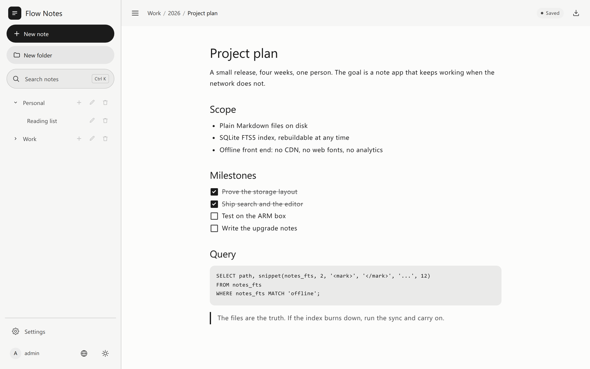
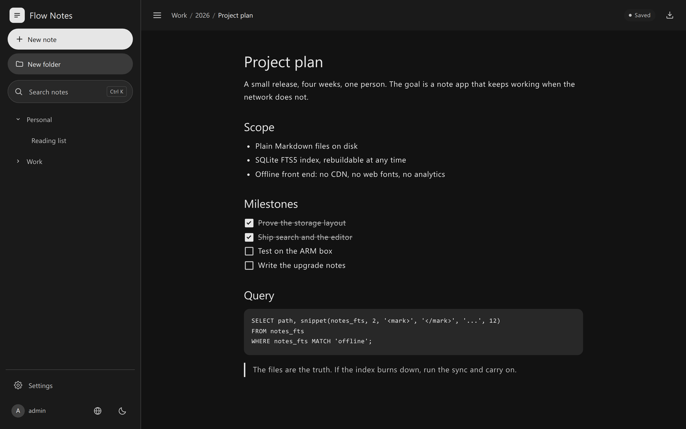

檔案優先
一篇筆記一個 Markdown 檔，一個資料夾一層側邊欄，沒有隱藏格式。用 SSH 改檔案也行，目錄樹與索引兩秒內跟上。
自架 · Docker · MIT
Flow Notes 是自己跑的筆記伺服器。每篇筆記都是 data/notes/<帳號>/
底下的純 Markdown 檔，資料夾結構就是側邊欄，SQLite 只存帳號和一份從檔案重建的
索引。瀏覽器端不向網路抓任何東西——沒有 CDN、沒有線上字體、沒有外部圖示。


儲存、檢索、編輯與帳號，以及每一項刻意不做的事。
一篇筆記一個 Markdown 檔，一個資料夾一層側邊欄，沒有隱藏格式。用 SSH 改檔案也行，目錄樹與索引兩秒內跟上。
SQLite FTS5，用 snippet() 產生片段並以 <mark> 標記命中；FTS 落空時退到子字串比對，中文詞也找得到。索引刪掉重掃就好。
Tiptap 加上 Markdown 往返。行首打 / 開 17 個指令；# 、- 、1. 、> 、--- 與圍籬邊打邊轉換；貼上截圖會自動上傳並插入。
每個帳號擁有 notes/<名稱>/ 與 uploads/<名稱>/，索引查詢一律按 owner 過濾。管理員可新增、停用、刪除帳號；刪除是把檔案搬進 data/trash/。
瀏覽器需要的東西都由你的伺服器提供：編輯器 bundle 由 esbuild 在本機打包、所有圖示都是內嵌 SVG、Content-Security-Policy 只允許同源。只能連內網、連不上外網的瀏覽器仍然拿到完整介面。
英、阿拉伯、西、法、俄與繁簡中文，阿拉伯語是完整鏡像版面。淺色、深色或跟隨系統，另有六種強調色。
停筆 600 毫秒就存；頁面被隱藏時用 keepalive 補送未送的變更。任何一篇也能以 Markdown 的 ZIP 帶走。
multi-arch 映像支援 linux/amd64 與 linux/arm64。掛上 ./data，整個狀態就都在那裡：筆記、圖片、帳號、索引。
都是從實際跑起來的實例、用示範帳號截的——跟你 pull 到的同一版。


Docker 加 Compose，一個埠、一個目錄。不用外部資料庫、不用郵件伺服器、也不用自己處理憑證。
映像從原始碼在本機建置。./data 第一次啟動時建立；把它掛進去，整個狀態就在裡面。
git clone https://github.com/noelbennettz/flownotes.git
cd flownotes
mkdir -p data
docker compose up -d --buildghcr.io/noelbennettz/flownotes:latest 是公開的 multi-arch 映像，docker pull 不需要登入。專案附的 Compose 檔一樣會掛上 ./data、開同一個埠。
docker compose -f docker-compose.ghcr.yml up -d
docker compose -f docker-compose.ghcr.yml logs -f flownotes打開 http://你的伺服器:8000/；還沒有帳號時會跳到 /setup。建立管理員之後就是你的了。如果這個埠可能被別人先連上，第一次啟動前設 FLOWNOTES_SETUP_TOKEN，精靈會要求它，其餘請求一律拒絕。
Rootless Docker：容器使用者是 1000，會映射成 sub-uid，寫不進你自己的
./data。在 .env 設 FLOWNOTES_UID=0 與
FLOWNOTES_GID=0，容器就會以你的身分寫檔；一般 rootful 安裝維持預設即可。
Flow Notes 刻意不做的事，搬筆記進來之前先看一眼。
(conflict …) 副本。那是避免遺失內容的保底機制，不代表支援多裝置同時編輯。/uploads 不是公開的，筆記圖片只給擁有者或管理員。單人時代留下的檔案，任何已登入帳號都讀得到。
刻意支援純 HTTP。session cookie 是 HttpOnly 加
SameSite=Lax，但沒有 Secure，所以內網位址像
http://192.168.1.10:8000 能登入。要對外之前請放到 TLS 代理後面。
搜尋是方便，不是真相。索引負責排序與標記，檔案決定什麼存在，懷疑時跑
POST /api/resync 重新比對。index.db 也存著帳號，刪之前先備份。
跑什麼、聽哪個埠、存了哪些東西。
./data 磁碟區：筆記、上傳、index.db、.session-secret、trash把一整年的筆記搬進來之前，值得先知道的事。
data/notes/<帳號>/，一篇筆記一個 .md，資料夾就是資料夾。data/index.db 存帳號與 FTS5 索引；搜尋表可以從檔案重建，帳號資料不行，所以刪之前先複製它。真正值得備份的是 Markdown。
可以。GET /api/tree 與 GET /api/search 每帳號最多每兩秒比對一次磁碟與索引，外部修改不用重啟就會出現。同一篇在瀏覽器開著時若檔案被改寫，瀏覽器下次儲存會在改動位於不同位置時合併；若改到同一批行，瀏覽器的內容會另存成一份 (conflict …) 筆記，不會蓋掉外部那份。
頁面、樣式、編輯器 bundle 與所有圖示都同源，伺服器送出同源的 Content-Security-Policy（default-src 'self'，另外允許 App 自己內嵌的樣式與腳本）。任何時刻都不會向 CDN、字體服務或圖示站台抓東西。
在伺服器上跑 python -m app.cli passwd admin，或 docker compose exec -it flownotes python -m app.cli passwd admin。它直接寫資料庫，不用重啟，該帳號既有的 session 會立刻失效。
複製 data/——筆記、上傳、index.db 與 .session-secret——在新主機用同一個目錄起容器即可。帶著 session 密鑰，大家不用重新登入；不帶只是被登出。
它就是個小型自用工具：自己跑、fork、改、再散布都行，唯一的要求是副本要帶著版權聲明。
沒有。App 以純 HTTP 監聽（uvicorn 8000 埠），映像裡沒有憑證、沒有 ACME 用戶端、也沒有 HSTS 標頭。這是刻意的：session cookie 是 HttpOnly 加 SameSite=Lax，但沒有 Secure，內網位址像 http://192.168.1.10:8000 才登得進去。請讓這個埠留在內網，或在前端終結 TLS。
Caddy 兩行就好：notes.example.com { reverse_proxy 127.0.0.1:8000 }。nginx 則是 proxy_pass http://127.0.0.1:8000; 加 proxy_set_header Host $host;，並把 client_max_body_size 提到 21m 以上，否則 20 MB 的圖片上傳會被擋。不需要 WebSocket upgrade；把發布埠綁在 127.0.0.1 就能讓純 HTTP 不出現在網路上。兩種設定都寫在 DOCS.md。
不行。Flow Notes 不支援同時編輯：沒有即時同步、沒有線上狀態、也沒有游標共享，兩台裝置無法可靠地同時在同一篇裡打字。存檔的版本檢查只是保底——改在不同位置會合併，改到同一批行時會保留一份、另一份另存為 (conflict …) 筆記——那是為了避免內容遺失，不是讓多裝置同時編輯成為支援的工作流程。正在編輯的筆記請一次只用一台裝置。